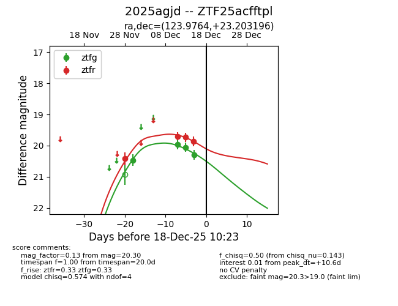
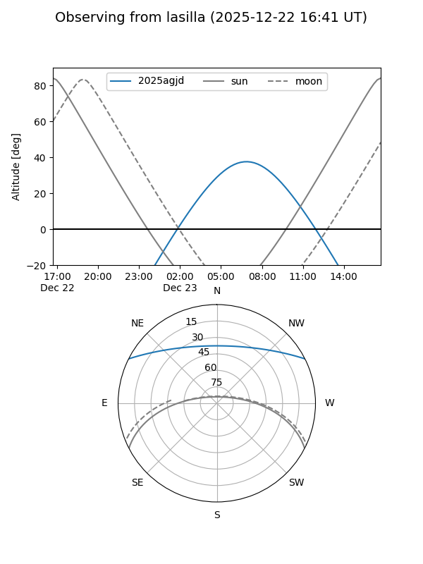
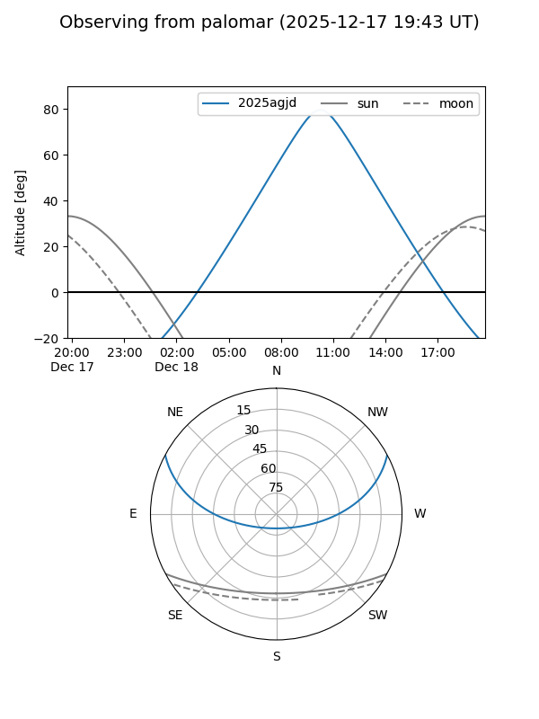
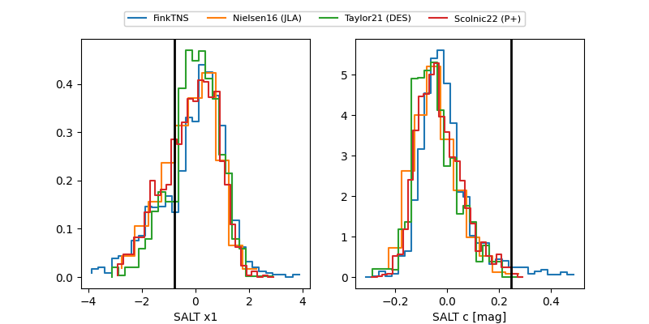

2025agjd
Target 2025agjd at 2025-12-22 18:11
Aliases and brokers:
FINK: fink-portal.org/ZTF25acfftpl
Lasair: lasair-ztf.lsst.ac.uk/objects/ZTF25acfftpl
ALeRCE: alerce.online/object/ZTF25acfftpl
TNS: wis-tns.org/object/2025agjd
YSE: ziggy.ucolick.org/yse/transient_detail/2025agjd
alt names
ZTF25acfftpl (ztf,fink_ztf)
2025agjd (tns,yse)
Coordinates:
equatorial (ra, dec) = 123.9764,+23.20320
equatorial (HMS+DMS) = 08:15:54.34,+23:12:11.50
galactic (l, b) = (199.8232,+28.31754)
Flags:
Photometry:
last ztfg=20.30, ztfr=20.15
4 ztfg, 5 ztfr detections
Lightcurve

Visibility


Additional plots
